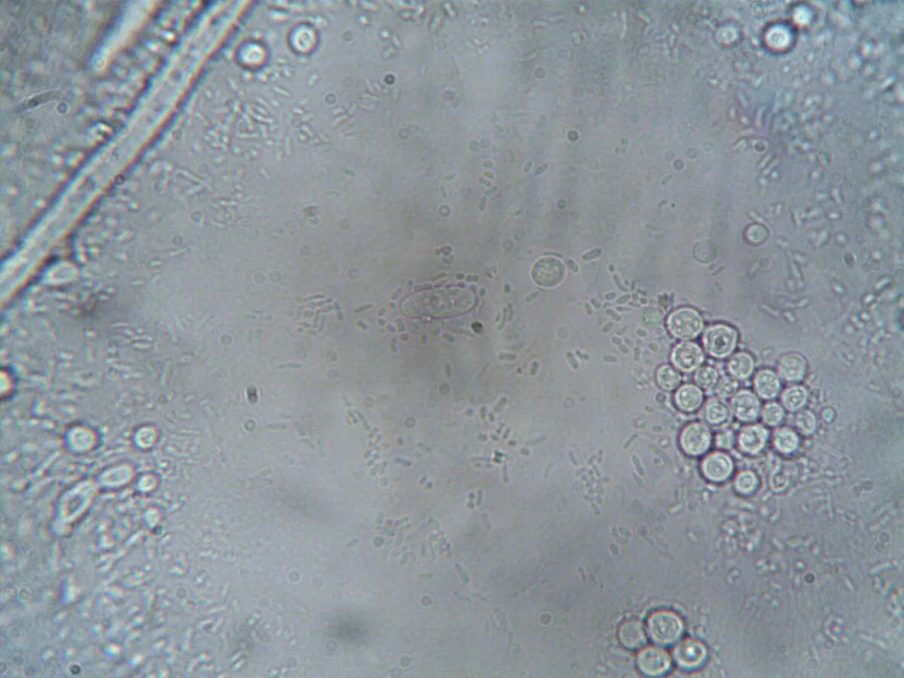
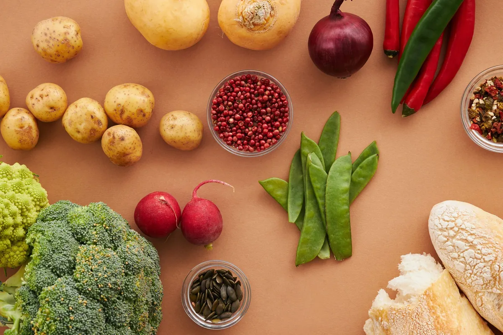
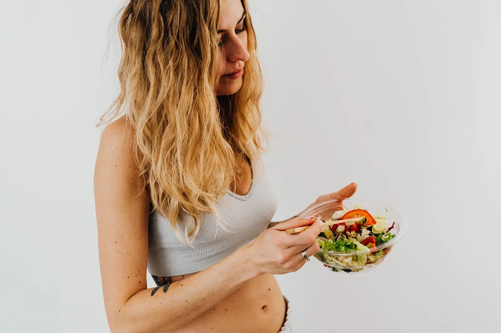

Beyond Delicious: How Cheese Bacteria Boost Your Gut

Key takeaways
- I used to think my gut issues were just something I had to live with.
- Bloating, discomfort, that general 'blah' feeling – it was a constant companion.
- Track what feels sustainable and adjust gradually.
I used to think my gut issues were just something I had to live with. Bloating, discomfort, that general 'blah' feeling – it was a constant companion. I tried all the usual suspects: cutting out gluten, upping my fiber, drinking more water. Some things helped a little, but nothing felt like a real breakthrough. Then, I stumbled upon something that sounded too good to be true: the bacteria that give cheese its amazing flavor might actually be good for my gut. Yes, the very same microbes responsible for that tangy cheddar or creamy brie could be playing a role in Beyond Delicious: How Cheese Bacteria Boost Your Gut. It felt like a delicious paradox, and I was ready to dive in.
For years, we've heard about probiotics in yogurt and supplements. But cheese? The idea that fermented dairy, specifically cheese, could be a source of beneficial bacteria for our gut microbiome is fascinating. It turns out, the magic behind many cheeses isn't just aging and rennet; it's the work of specific bacterial strains, many of which are known probiotics. Think about the complex flavors and textures in a good Gruyère or a sharp Parmesan. That complexity often comes from microbial activity during the cheese-making process. These aren't just random microbes; they are carefully cultivated cultures, some of which can survive the journey through our digestive system and potentially colonize our gut.
My journey into this topic started with a nagging question: could my love for a good cheese board actually be contributing to my gut health, rather than hindering it? I was always told to be careful with dairy, especially if I had digestive sensitivities. But the science on fermented foods is evolving so rapidly. Many of these cheese bacteria, like certain species of *Lactobacillus* and *Bifidobacterium*, are the same ones found in popular probiotic supplements. They are the tiny powerhouses that break down lactose, produce beneficial compounds, and help maintain a healthy balance in our gut ecosystem.
When I started researching, I found that not all cheeses are created equal in this regard. Hard, aged cheeses like cheddar, Parmesan, and Swiss tend to be lower in lactose and higher in beneficial bacteria because of their long fermentation process. This is because the bacteria have more time to work their magic, breaking down sugars and developing those signature nutty or sharp flavors. So, that slice of aged cheddar isn't just tasty; it's potentially delivering a dose of gut-friendly microbes. It’s a stark contrast to the softer, fresher cheeses where the fermentation might be less extensive.
The science suggests that these cheese bacteria can contribute to gut health in several ways. They can help improve digestion by breaking down food components. They might also produce short-chain fatty acids (SCFAs) like butyrate, which are crucial fuel for our colon cells and have anti-inflammatory properties. This is huge for anyone dealing with gut discomfort or seeking overall wellness. Imagine getting these benefits from something as simple and enjoyable as a piece of cheese! It’s a far cry from bland, restrictive diets.
I've found that incorporating a few slices of a good quality, aged cheese into my meals has been a simple yet effective way to support my gut. It’s not about eating cheese all day, every day, but about mindful enjoyment. This aligns with the idea that a varied diet, rich in fermented foods, is key to a robust microbiome. Looking for more ways to support your digestive health? Check out this related healthy tip. It’s about finding practical strategies that fit into real life.
The 2-Minute Win
Next time you're at the grocery store, look for an aged cheddar or a hard Parmesan. Even a small piece can be a delicious way to explore the potential benefits of cheese bacteria for your gut.
It's also important to remember that the gut microbiome is incredibly complex. What works for one person might not work for another. My journey involved a lot of trial and error, and I learned to listen to my body. This is why exploring different fermented foods, beyond just yogurt, is so valuable. If you're looking for a another practical guide on food and gut health, I've got you covered. It’s about finding what resonates with you.
Pro-Tip: Look for cheeses that specifically mention the use of 'live and active cultures' or are aged for a significant period (12+ months for hard cheeses). These are more likely to contain the beneficial bacteria we're talking about. Avoid highly processed cheese products, which often have fewer beneficial microbes.
The idea that a food as universally loved as cheese could be a tool for gut health is incredibly empowering. It shifts the narrative from restriction to enjoyment. It’s about making informed choices that align with both pleasure and well-being. This understanding has been a game-changer for me, helping me feel more in control of my health without feeling deprived. For a similar wellness insight, consider the broader world of fermented foods.
My personal philosophy is that health shouldn't be about perfection; it should be about progress and finding joy in the process. This includes enjoying delicious foods that also happen to be good for you. If you're curious about how to maintain this balance, stay consistent with this approach to eating. It's about sustainable habits, not fleeting trends.
Beyond the bacteria, cheese also offers valuable nutrients like calcium and protein. When we think about improving our gut health, we often focus on supplements or specific 'superfoods'. But sometimes, the answers are already in the foods we love. Exploring the world of cheese, with its diverse bacterial profiles and potential gut benefits, is a delicious path to consider. Want to explore more gut guides? There's a whole world of information out there.
Educational only — not medical advice.
Disclosure: This page may contain affiliate links.
Recommended Reading
- Mindful Eating: Boost Gut Health & Digestion Naturally
- Mindful Eating: Boost Digestion & Gut Health
- Can Meal Timing Improve Gut Health? The Fiber and Fermented Foods Connection
More in gut

gutGut Health for Weight Loss: The Microbiome Connection and Your Waistline
Discover how Gut Health for Weight Loss is linked to your microbiome. Learn practical tips for a healthier gut to suppor
Read article →
gutGut Health for Beginners: Unlock Your Microbiome & Boost Energy with Diet
Feeling sluggish? Unlock your gut health for beginners! Learn how your microbiome impacts energy and mood, and discover
Read article →